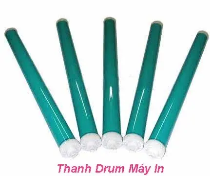
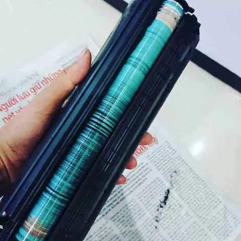

Tại sao ? Phải thay drum máy in khi nạp mực lần đầu - Lý Do !!
Tại Sao Phải Thay Drum Máy In Khi Bơm Mực Lần Đầu Tiên
Drum máy in là gi ?
Drum máy in hay còn gọi là trống máy in : là một linh kiện trong hộp mực máy in, có chức năng in chữ trên giấy. Bản in có đậm đẹp hay không thì có nhiều lý do, tuy nhiên thanh drum (Trống) có chức năng chính. Trên thanh drum có phủ một lớp tích điện vì vậy khi hộp quang bắng tia điện lên thanh Drum thì trên thanh drum sẻ hiện chữ lên. Những dòng chữ giống như quang phổ này sẻ tích điện trái dấu với từ tính của mực nạp. và nó sẻ hút mực từ thanh từ hộp mực qua và in lên trang giấy.

Tại sao phải thay Drum máy in khi nạp mực in lần đầu ?
Có một số khách hàng thắc mắc là " tại sao phải thay drum khi bơm mực máy in lần đầu ? " , " Lý do phải thay trống máy in trong khi máy mới mua " , Mới nạp mực in lần đầu mà kỹ thuật báo thay drum, tại sao phải thay drum bảng in mới đẹp , lý do đổ mực in lần đầu phải thay trống ? ....
Với những câu hỏi trên, công ty nạp mực in quận bình thạnh xin chia sẻ, giải đáp thắc mắc của quý khách hàng như sau:
Lý do nạp mực máy in lần đầu là phải thay trống máy in là bởi vì nhà sản xuất máy in khi khi sản xuất máy in, hộp mực thì với tiêu chí cũng các hãng canon, hp là họ không cung cấp linh kiện hộp mực cũng như không cung cấp mực nạp cho máy in. Trong trường hợp cần Nạp mực máy in hay cần thay thế linh kiện hộp mực in thì không có. và khách hàng chỉ mua hộp mực mới.
- Nguyên nhân : khi quý khách hàng cần bơm mực máy in thì mực in chính hãng sẻ không có trên thị trường. và quý khách phản nạp mực do maylaysia, nhật hoặc mực USA cung cấp
- Chính vì nạp các loại mực khác (Không phải mực hãng) , và mực nạp này không tương thích với Thanh Drum của hãng nên bản in sẻ không được đẹp và không rõ lắm.
- Khi quý khách bơm loại mực khác thì phải thay thêm thanh drum cho tương thích với mực nạp vào thì bản in mới đậm đẹp được.
Tóm lại là: Mực nạp phải tương thích với thanh Drum. Vì mực hãng không có trên thị trường nên bắc buộc phải nạp loại mực khác, ► và khi nạp loại mực khác thì phải gắng thanh Drum khác cho tương thích.

Xem thêm:
Vậy khi nào thì mới phải thay trống máy in ?
Như đã nói ở đầu trang - Trống máy in là bộ phận khá quan trọng trong hộp mực, quyết định chính về độ đậm đẹp của hộp mực in và thanh drum cũng là linh kiện hoạt động nhiều nhất trên hộp mực vậy nên có 2 trường hợp cần thay trống máy
Trường hợp 1: Thay thanh drum khi bơm mực in lần đầu tiên
Trường hợp 2: Sau một thời gian in ấn, Nạp mực in khoản 3-4 lần thì thanh Drum bị mòn, bị xước hoặc bị chấm ... lúc này bản in sẻ bị mờ và ta phải thay thay trống máy in mới thì bản in mới rõ đẹp lại như ban đầu.
Tuy nhiên ngoài mực in, thanh drum hộp mực in thì còn một số linh kiện khác cũng góp phần làm đẹp bản in như: Trục từ máy in, trục xạc, gạt lớn, gạt nhỏ hộp mực ...
Lưu ý: không phải tất cả máy in đều phải thay drum khi nạp mực in lần đầu. chỉ có một số dòng máy in hp - canon, ứng với một số hộp mực như: hộp mực 35A, Hộp mực 78A, hộp mực 85A, hộp mực 83A ...
Một số máy in - hộp mực in của hãng phải thay drum lần đầu như:
Máy in Canon : Canon LBP 3050, Canon LBP 6000, Canon LBP 6030, 6030w, Canon LBP 6230, lbp 6230w, Canon LBP 151 ... Tương ứng với hộp mực 35A , hộp mực 78A, Hộp mực 83A, Hộp mực 85A
Hộp mực máy in HP: HP 1102, Hp 1005, Hp 1006 .....
Giá thay Drum máy in là bao nhiêu ?
Giá Tham khảo Thay Drum một số dòng như:
- Giá thay Drum HP : 120k - 160k - Tùy Dòng máy
- Thay Drum mới Canon : 120k - 160K - Tùy dòng máy
- Giá thay Drum máy in samsung : Khoản 150k - 250k
- Giá Thay Drum máy in Brother : từ 200k - 350k
- Giá Thay Drum máy in Panasoni : từ 150k - 450k ► Tùy loại máy in
- Giá Thay trống máy in Ricoh : tự 150 - 300K Tùy loại.
Bảng giá thay drum máy in trên chỉ có tính chất tham khảo, Để tư vấn chính xác khách hàng có thể tham khảo tư vấn tại : Công ty nạp mực in quận tân bình .
Xem thêm : Giá Nạp mực máy in tận nơi
Công Ty Tin Học Hi-Tech:
Tel : 089 886 9964 - Zalo: 0934393550
Các chi nhánh tại Tphcm
- http://www.tinhocht.com/home/nap-muc-may-in-quan-1
- http://www.tinhocht.com/home/nap-muc-may-in-quan-3
- http://www.tinhocht.com/home/nap-muc-may-in-quan-5
- http://www.tinhocht.com/home/nap-muc-may-in-quan-6
- http://www.tinhocht.com/home/nap-muc-may-in-quan-10
- http://www.tinhocht.com/home/nap-muc-may-in-quan-11
Tại sao phải thay drum máy in (tróng máy in) khi phải bơm mực in lần đầu. lý do thay tróng máy in khi nạp mực, vậy Drum máy in là gì và khi nào phải thay Drum máy in, Nạp mực in máy lần phải thay trống